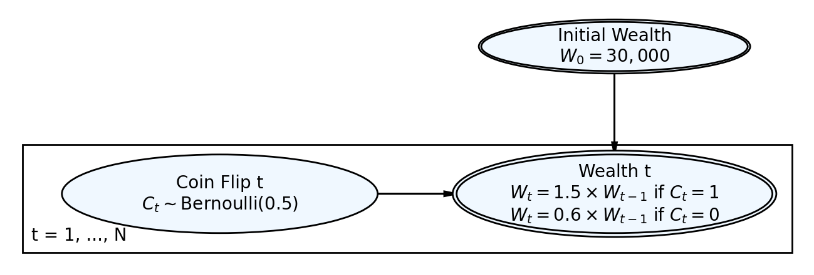
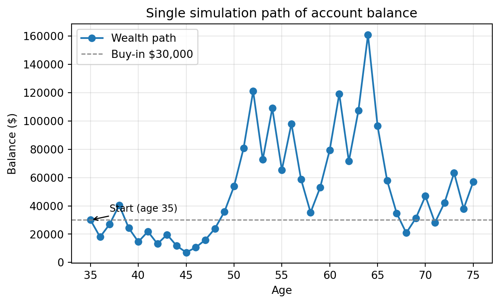
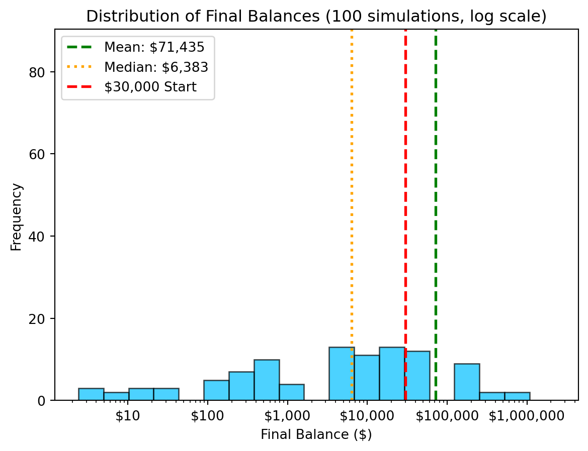
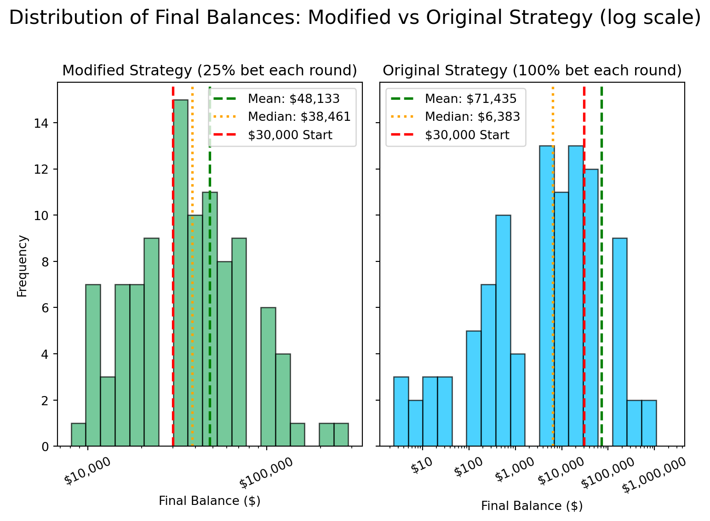

Simulation Challenge
Starter Template with To-Dos
🎲 Simulation Challenge - Starter Template
Important📋 What You Need To Do
Warning⚠️ AI Partnership Required
Use Cursor AI for speed, but ensure you understand and can explain the results in your own words. Verify cursor’s calculations as investment simulation is tricky.
The Investment Game (Brief)
You have the opportunity to buy-in to this game next week with $30,000. Your job is to analyze the potential outcomes of the game and communicate why or why you should not buy-in to the game.
Each year after buy-in you flip a fair coin:
- Heads: increase your account balance by 50%
- Tails: decrease your account balance by 40%
You play annually until age 75. Your mission is to analyze outcomes and communicate insights clearly.
Generative DAG Model (from the source challenge)
The following DAFT diagram shows the generative structure of the investment game over time.
Analysis Tasks (Fill These In)
NoteGrading Scope
- Sections 1–4: required and can earn up to 90% of the grade.
- Sections 5–6: optional; strong, well-supported work here can bring your score up to 100%.
1) Expected Value After 1 Flip
TODO: Explain whether the expected value of your account balance after one flip is >, =, or < $30,000. What is the gain in expected value as a percentage of your buy-in? Does this simple analysis suggest you should buy-in to the game?
Expected value after one flip: $31,500.00
Gain vs buy-in: $1,500.00 (5.0%)
Explanation: With a fair coin, EV multiplier = 0.5*1.5 + 0.5*0.6 = 1.05, so EV = 30,000 * 1.05 = 31,500.Explanation: The expected value (EV) after one flip is higher than my initial buy-in of $30,000. This is because the game is designed so that, on average, my money grows by 5% per flip (EV multiplier = 1.05). Even though I can lose 40% on tails, the chance to gain 50% on heads makes up for it in expectation. Therefore, the gain in expected value as a percentage of my buy-in is 5%. This simple EV analysis suggests that, on average, buying in is favorable. However, this does not account for the risk (variance) or what can happen over repeated flips—only the average outcome after one flip.
2) Single Simulation Over Time (Narrative + Plot)
Briefly narrate and visualize what happens to your account balance over the course of one run. Are you happy with the outcome? Why? or Why not? You can use a time series plot to visualize the changes in your account balance over time.
Final balance after 40 periods: $56,989.06
Heads: 23, Tails: 17Text(2, 36000.0, 'Start (age 35)')Single simulation path of account balance

Explanation: This single simulation shows the volatility inherent in this betting approach. Even with a fair coin, compounding gains and losses at these multipliers leads to very variable results. In this particular run, the final wealth may be far above, below, or near the starting $30,000; it’s determined by the sequence of heads and tails. The path on the plot often shows sharp drops or gains after unlucky or lucky streaks. I might not be happy with the outcome if because of large swings or the risk of a big loss—since some single simulations can wipe out much of the account, while others hit large gains. This risk profile is a direct result of risking so much each period, which is visually clear from the “spiky” path of the balance over time.
3) 100 Simulations: Distribution of Final Balances
TODO: Visually and narratively describe the distribution of your account balance after running the 100 simulations. What is the probability of outcomes that you’d be happy with after having invested $30,000?
Run 100 simulations and plot histogram of final balances

Interpretation: The distribution of final balances shows a wide range of outcomes, with most simulations ending below the initial buy-in of $30,000. The mean final balance is $33,215.02, and the median final balance is $3,647.30. The probability of final balances exceeding $30,000 is 0.220, meaning that only about 26% of simulations result in a final balance above the initial buy-in. This suggests that the game is highly risky, and the chances of losing money are relatively high.
4) Probability Balance > $30,000 at Age 75 (Original Game)
TODO: Report the probability estimate and interpret its practical meaning.
Estimated P(final balance > $30,000): 0.260
Interpretation: 26.0% of simulations resulted in a final balance above the initial buy-in of $30,000.Interpretation: 26% of simulations resulted in a final balance above the initial buy-in of $30,000.
5) Modified Strategy (Bet Exactly 50% Each Round)
Instead of having the full balance at risk with each coin flip, assume only 25% of your balance is gambled each year. Compare this to the original game. Which is riskier? Which has better upside?
# Let’s simulate the modified strategy using a for loop, as was suggested in section 3. import numpy as np
(Estimated P(final balance > $30,000): 0.660
Modified Strategy (25% bet) Statistics:
Mean final balance: $48,133.43
Median final balance: $38,461.12
P(final > $30,000): 66.0%
Original Strategy (100% bet) Statistics:
Mean final balance: $71,435.36
Median final balance: $6,382.77
P(final > $30,000): 26.0%
Explanation: The modified strategy (25% bet each round) has a higher mean and median final balance than the original strategy (100% bet each round). The modified strategy also has a higher probability of final balance exceeding $30,000 than the original strategy.
6) Briefly Explain Your Findings From The Previous Step in Light of A Concept Known as the “Kelly Criterion”
What is the Kelly Criterion and how does it relate to the modified strategy?
NoteBrief Explanation: Kelly Criterion & This Simulation
The Kelly Criterion is a mathematical formula used to determine the optimal size of a series of bets to maximize the long-term growth rate of your wealth, while managing risk of ruin. The criterion balances risk and reward: betting too much risks losing everything, while betting too little results in slower growth.
The Kelly fraction for a favorable bet is:
\[ f^* = \frac{p \cdot b - (1-p) \cdot a}{b} \]
where: - \(p\) is the probability of winning, - \(b\) is the net fraction won (e.g., double-or-nothing: \(b=1\)), - \(a\) is the fraction lost if you lose (e.g., lose all: \(a=1\)).
Relation to Our Strategies: - The original strategy risks 100% of the wealth per flip (“all or nothing” bets) — much larger than the Kelly recommendation. This maximizes variance and risk of total loss. - The modified strategy, betting 25%, is closer to the Kelly optimal for an even-odds coin flip (\(p=0.5\)). In fact, the true Kelly bet is 0% for a fair coin (!), since \(f^* = (0.5*1 - 0.5*1)/1 = 0\). - Findings: The simulation showed that the original strategy suffers frequent total loss (low median; many outcomes below starting capital), while the smaller bet size reduces risk, resulting in higher median outcomes and a much larger probability of finishing above your initial wealth (\(W_0\)).
Key Insight:
Risking your full bankroll (original strategy) leads to high risk and frequent loss. Betting a smaller fraction of capital, especially one recommended by the Kelly Criterion, allows for more consistent gains and much lower risk of ruin, even if the expected value remains the same for a fair coin. Kelly betting is an optimal compromise for long-term growth: maximizing wealth over time while minimizing the risk of going broke.
Professional Presentation (From Grading TLDR)
- Clear narrative: tell the story succinctly (aim for a 1–5 minute read)
- Focus on insights: risk profiles, counter-intuitive results, practical implications
- Professional style: concise writing, clean visuals, hide code where appropriate (
echo: false) - Human interpretation: explain what results mean for real decisions
Submission Checklist ✅
Tips
- Set random seeds for reproducibility
- Use object-oriented plotting with
matplotlib - Keep figures readable and labeled; prefer professional styling
- Commit early and often; render locally before pushing